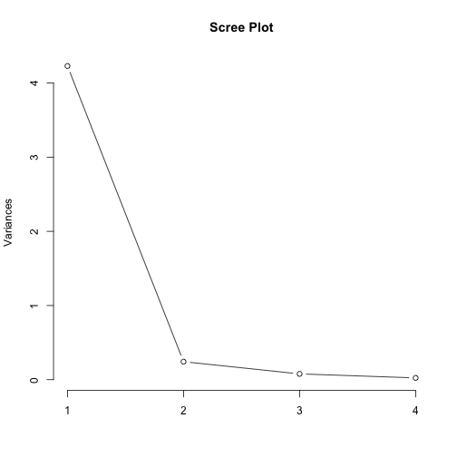
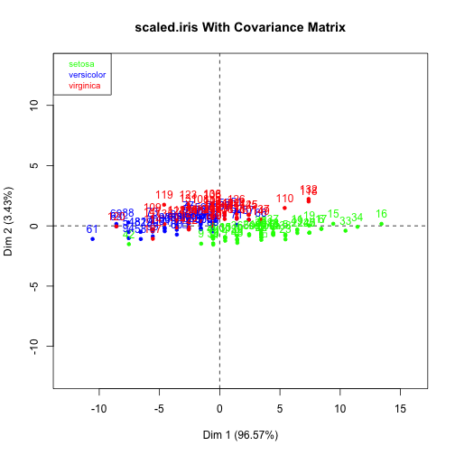
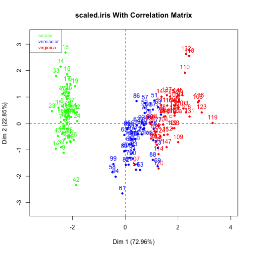

PCA for the uninitiated
Intuitive motivation via maximum variance interpretation
Ben Mabey
The ubiquitous & versatile PCA
- Dimensionality Reduction
- Data Visualization
- Learn faster
- Lossy Data Compression
- Noise Reduction
- Exploration
- Feature Extraction
- Regression (Orthogonal)
- Unsupervised Learning Algorithm
- Anomaly Detection (not the best)
- Matching/Distance (e.g. Eigenfaces, LSI)
- K-Means
- Computer Graphics (e.g. Bounded Volumes)
- and many more across various domains...
Majority of PCA tutorials...
- Organize dataset as matrix.
- Subtract off the mean for each measurement.
- Calculate the covariance matrix and perform eigendecomposition.
- Profit!
Majority of PCA tutorials...
- Organize dataset as matrix.
- Subtract off the mean for each measurement.
- Calculate the
covariancecorrelation matrix and perform eigendecomposition. - Profit!
Majority of PCA tutorials...
- Organize dataset as matrix.
- Subtract off the mean for each measurement.
Calculate thecovariancecorrelation matrix and perform eigendecomposition.- Perform SVD.
- Profit!

The intuitive Magic Math behind PCA
- Maximize the variance.
- Minimize the projection error.
\(P_{m\times m}X_{m\times n} = Y_{m\times n}\)
\(SNR = \frac{\sigma^2_{signal}}{\sigma^2_{noise}}\)
Rotate to maximize variance


library(PerformanceAnalytics)
chart.Correlation(iris[-5], bg = iris$Species, pch = 21)

chart.Correlation(decorrelated.iris, bg = iris$Species, pch = 21)

Variance and Covariance
\( \DeclareMathOperator{\stddev}{stddev} \DeclareMathOperator{\var}{var} \DeclareMathOperator{\cov}{cov} \DeclareMathOperator{\corr}{corr} \)
| Mathematically Useful | Intuitive | |
|---|---|---|
| Dispersion | \[ \begin{eqnarray*} \sigma^2_A = \var(A) &=& E[(A - \mu_A)^2] \\ &=& \frac{1}{n} \sum_{i=1}^n (a_i - \mu_A)^2 \end{eqnarray*} \] | $$\sigma_A = \stddev(A) = \sqrt{\var(A)}$$ |
| Relationship | \[ \begin{eqnarray*} \sigma_{AB} = \cov(A,B) &=& E[(A - \mu_A)(B - \mu_B)] \\ &=& \frac{1}{n} \sum_{i=1}^n (a_i - \mu_A)(b_i - \mu_B) \end{eqnarray*} \] | $$\rho_{AB} = \frac{\sigma_{AB}}{\sigma_A\ \sigma_B} = \frac{\cov(AB)}{\stddev(A) \stddev(B)}$$ unitless measure $(-1.0..1.0)$ |
$$\cov(A,A) = \var(A)$$
$\sigma_{AB}$ or $\rho_{AB}$ is $0$ if and only if $A$ and $B$ are uncorrelated.
Covariance Matrix
\[ \Sigma = \begin{bmatrix} \sigma_{1,1} & \sigma_{1,2} & \cdots & \sigma_{1,n} \\ \\ \sigma_{2,1} & \sigma_{2,2} & \cdots & \sigma_{2,n} \\ \\ \vdots & \vdots & \ddots & \vdots \\ \\ \sigma_{n,1} & \sigma_{n,2} & \cdots & \sigma_{n,n} \\ \\ \end{bmatrix} \]
Preprocess $X$ so that it has zero mean.
Now $\sigma_{AB} = \frac 1n \sum_{i=1}^n a_i b_i$
$$\Sigma_X = \frac{1}{n}X^TX$$
center <- function(x) x - mean(x)
iris.centered <- apply(as.matrix(iris[-5]), 2, center)
(t(iris.centered) %*% iris.centered)/(nrow(iris) - 1)
## Sepal.Length Sepal.Width Petal.Length Petal.Width
## Sepal.Length 0.68569 -0.04243 1.2743 0.5163
## Sepal.Width -0.04243 0.18998 -0.3297 -0.1216
## Petal.Length 1.27432 -0.32966 3.1163 1.2956
## Petal.Width 0.51627 -0.12164 1.2956 0.5810
center <- function(x) x - mean(x)
m.centered <- apply(as.matrix(iris[-5]), 2, center)
(t(m.centered) %*% m.centered)/(nrow(iris) - 1)
## Sepal.Length Sepal.Width Petal.Length Petal.Width
## Sepal.Length 0.68569 -0.04243 1.2743 0.5163
## Sepal.Width -0.04243 0.18998 -0.3297 -0.1216
## Petal.Length 1.27432 -0.32966 3.1163 1.2956
## Petal.Width 0.51627 -0.12164 1.2956 0.5810
cov(iris[-5])
## Sepal.Length Sepal.Width Petal.Length Petal.Width
## Sepal.Length 0.68569 -0.04243 1.2743 0.5163
## Sepal.Width -0.04243 0.18998 -0.3297 -0.1216
## Petal.Length 1.27432 -0.32966 3.1163 1.2956
## Petal.Width 0.51627 -0.12164 1.2956 0.5810
What would our ideal \(\Sigma_Y\) look like?
\[PX = Y\]
\[
\Sigma_Y =
\begin{bmatrix}
\sigma^2_1\\
& \sigma^2_2 & \Huge 0\\
& & \ddots\\
& \Huge 0 & & \sigma^2_n\\
\end{bmatrix}
\]
i.e. $Y$ is decorrelated.
Our goal...
Find some orthonormal matrix \(P\) in \(PX = Y\) such that \(\Sigma_Y = YY^T\) is a diagonal matrix. The rows \(Y_n\) of \(P\) are the principal components of \(X\).
Note, that I transposed the design matrix (the data) so that covariance calculation is also reversed.
This will make our life easier...
Rewrite \(\Sigma_Y\) in terms of the unknown...
\[ \begin{eqnarray*} \Sigma_Y &=& \frac 1n YY^T \\ &=& \frac 1n (PX)(PX)^T \\ &=& \frac 1n PXX^TP^T \\ &=& P (\frac 1n XX^T) P^T \\ \Sigma_Y &=& P \Sigma_X P^T \end{eqnarray*} \]
Spectral Theorem / Principal Axis Theorem
Every symmetric matrix has the eigendecomposition (i.e. can be diagnolized) of: \[A = Q\Lambda Q^{-1} = Q\Lambda Q^T \]
Remember, we are choosing what \(P\) is...
\[PX = Y\]
Remember, we are choosing what \(P\) is...
Let every row, \(p_i\), be an eigenvector of \(\Sigma_X\). What this means is that \[P=Q^T\] where \(Q\) comes from the eigendecomposition of \(\Sigma_X\).\[\Sigma_X = Q\Lambda Q^T\]
Turn the Algebra crank...
\[ \begin{eqnarray*} \Sigma_Y &=& P \Sigma_X P^T \\ &=& P(Q\Lambda Q^T) P^T \\ &=& P(P^T\Lambda P) P^T \\ &=& (PP^T)\Lambda (PP^T) \\ &=& I\Lambda I \\ \Sigma_Y &=& \Lambda_{\Sigma_X} \\ \end{eqnarray*} \]
- The principal components are linear combinations of original features of $X$.
- The principal components of $X$ are the eigenvectors of $\Sigma_X$.
- The corresponding eigenvaules lie in $\Sigma_Y$ and represent the variance.
Manual PCA in R
iris.eigen = eigen(cov(iris.centered))
rownames(iris.eigen$vectors) = colnames(iris.centered)
colnames(iris.eigen$vectors) = c("PC1", "PC2", "PC3", "PC4")
iris.eigen
## $values
## [1] 4.22824 0.24267 0.07821 0.02384
##
## $vectors
## PC1 PC2 PC3 PC4
## Sepal.Length 0.36139 -0.65659 -0.58203 0.3155
## Sepal.Width -0.08452 -0.73016 0.59791 -0.3197
## Petal.Length 0.85667 0.17337 0.07624 -0.4798
## Petal.Width 0.35829 0.07548 0.54583 0.7537
Make the contributions intuitive...
iris.eigen$vectors^2
## PC1 PC2 PC3 PC4
## Sepal.Length 0.130600 0.431109 0.338759 0.09953
## Sepal.Width 0.007144 0.533136 0.357497 0.10222
## Petal.Length 0.733885 0.030058 0.005812 0.23025
## Petal.Width 0.128371 0.005697 0.297932 0.56800
squared <- iris.eigen$vectors^2
sorted.squares <- squared[order(squared[, 1]), 1]
dotplot(sorted.squares, main = "Variable Contributions to PC1", cex = 1.5, col = "red")

# library(FactoMineR); iris.pca <- PCA(iris, quali.sup=5)
plot(iris.pca, choix = "var", title = "Correlation Circle")

# res.pca <- PCA(decathlon, quanti.sup=11:12, quali.sup = 13)
plot(res.pca, choix = "var", title = "Correlation Circle")

What does the variance (eigenvaules) tell us?
iris.eigen$values # The variance for each corresponding PC
## [1] 4.22824 0.24267 0.07821 0.02384
# library(FactoMineR); iris.pca <- PCA(iris, quali.sup=5)
plot(iris.pca, habillage = 5, col.hab = c("green", "blue", "red"), title = "Dataset projected onto PC1-2 Subspace")

How many components should you keep?
Ratio of variance retained (e.g. 99% is common):
\[\frac{\sum_{i=1}^k \sigma_i}{\sum_{i=1}^n \sigma_i}\]
cumsum(iris.eigen$values/sum(iris.eigen$values))
## [1] 0.9246 0.9777 0.9948 1.0000
The Elbow Test

iris.prcomp <- prcomp(iris[-5], center = TRUE, scale = FALSE)
screeplot(iris.prcomp, type = "line", main = "Scree Plot")

Kaiser Criterion
Keep only the components whose eigenvalue is larger than the average eigenvalue. For a correlation PCA, this rule boils down to the standard advice to "keep only the eigenvalues larger than 1".
eigen(cor(iris.centered))$values
## [1] 2.91850 0.91403 0.14676 0.02071
Remeber, always...
CROSS
VALIDATE!
PCA is overused and commonly misused, so always verify it is helping by cross validating.
Lots of other ways to aid interpretation...
iris.prcomp <- prcomp(iris[-5], center = TRUE, scale = FALSE)
biplot(iris.prcomp)

Learn more...

How will PCA perform?
scaled.iris <- iris
scaled.iris$Petal.Length <- iris$Petal.Length/1000
scaled.iris$Petal.Width <- iris$Petal.Width/1000
scaled.iris$Sepal.Width <- iris$Sepal.Width * 10
Scale Matters


Correlation Matrix - Standardize the data
# (In practice just use the built-in cor function)
standardize <- function(x) {
centered <- x - mean(x)
centered/sd(centered)
}
scaled.iris.standardized <- apply(as.matrix(scaled.iris[-5]), 2, standardize)
(t(scaled.iris.standardized) %*% scaled.iris.standardized)/(nrow(iris) - 1)
## Sepal.Length Sepal.Width Petal.Length Petal.Width
## Sepal.Length 1.0000 -0.1176 0.8718 0.8179
## Sepal.Width -0.1176 1.0000 -0.4284 -0.3661
## Petal.Length 0.8718 -0.4284 1.0000 0.9629
## Petal.Width 0.8179 -0.3661 0.9629 1.0000
Ok, so why SVD? And how is it equivalent?
Short answer on why:
- SVD is more numerically stable
- More efficient
Especially when operating on a wide matrix.. you skip the step of calculating the covariance matrix - There are a lot of SVD algoritms and implementations to choose from
"absolutely a high point of linear algebra"
Every matrix has the singular value decomposition (SVD) of: \[A = UDV^T \]
Hey, \(AA^T\) and \(A^TA\) look familar...
\[ \begin{eqnarray*} A &=& U DV^T \\ AA^T &=& UDV^T(UDV^T)^T \\ &=& UDV^TVD^T U^T \\ &=& UDD^TU^T \ \ (V^TV = I\ \mbox{since $V$, and $U$, are orthonormal}) \\ AA^T &=& U D^2 U^T \ \ (\mbox{since $D$ is a diagnol matrix}) \\ \end{eqnarray*} \] Recall that eigendecomposition for an orthonormal matrix is \(A = Q \Lambda Q^T\).
Therefore \(U\) are the eigenvectors of \(AA^T\) and \(D^2\) are the eigenvalues.
Likewise \(V\) are the eigenvectors of \(A^TA\) and \(D^2\) are the eigenvalues.
Turn the crank once more...
Let a new matrix \(Y = \frac{1}{\sqrt{n}}X^T\) where each column of \(Y\) is mean centered.
\[ \begin{eqnarray*} Y^TY &=& (\frac{1}{\sqrt{n}}X^T)^T(\frac{1}{\sqrt{n}}X^T) \\ &=& \frac 1n XX^T \\ Y^TY &=& \Sigma_X \end{eqnarray*} \]
So, if we run SVD on our \(Y\) then \(V\) will contain the eigenvectors of \(\Sigma_X\)... \(X\)'s principal components! Our eigenvalues, the variances, will be \(D^2\).
Tada!
y <- iris.centered/sqrt(nrow(iris) - 1)
y.svd <- svd(y)
pcs <- y.svd$v
rownames(pcs) = colnames(iris.centered)
colnames(pcs) = c("PC1", "PC2", "PC3", "PC4")
pcs
## PC1 PC2 PC3 PC4
## Sepal.Length 0.36139 -0.65659 0.58203 0.3155
## Sepal.Width -0.08452 -0.73016 -0.59791 -0.3197
## Petal.Length 0.85667 0.17337 -0.07624 -0.4798
## Petal.Width 0.35829 0.07548 -0.54583 0.7537
y.svd$d^2 # variances
## [1] 4.22824 0.24267 0.07821 0.02384
References and Resources
- Jon Shlens (versions 2.0 and 3.1), Tutorial on Principal Component Analysis
- H Abdi and L J Williams (2010), Principal component analysis
- Andrew Ng (2009), cs229 Lecture Notes 10
- Andrew Ng (2009), cs229 Lectures 14 & 15
- Christopher Bishop (2006), Pattern Recognition and Machine Learning, section 12.1
- Steve Pittard (2012), Principal Components Analysis Using R
- Quick-R, Principal Components and Factor Analysis (good pointers to additional R packages)
- C Ding, X He (2004), K-means Clustering via Principal Component Analysis